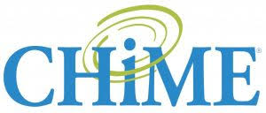

College of Healthcare Information Management Executives (CHIME), May, 2018 - Present
- Performed database management tasks using Excel, Microsoft Access and SQL to ensure the integrity of Healthcare's Most Wired Survey data
- Created high-fidelity data visualization mocku-ups with healthcare CIOs/IT executives as targeted end-users
- Developed a tool that links Most Wired Survey results data to CMS/AHD data allowing the organizatin to conduct more powerful statistical analyses
Michigan Clinical Outcomes Research and Reporting Program, June, 2016 - August, 2018
- Constructed two REDCap survey databases with cohorts of 1900+ patients used for developing research papers to be published in reputable medical journals
- Abstracted clinical data on hundreds of patients from Epic EMR, becoming second author for paper accepted by the American Association of Cardiovascular and Pulmonary Rehabilition (AACVPR)
- Awarded William Whelan Named Intern (May, 2016)